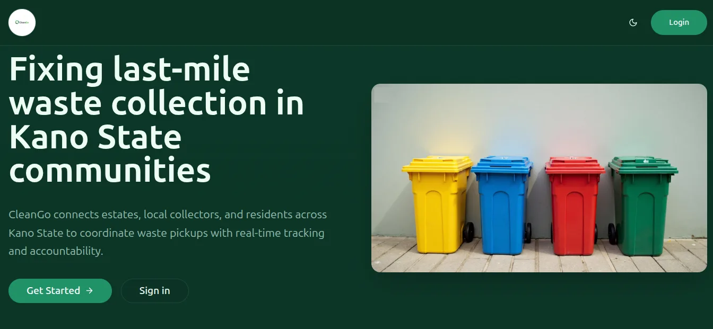

Team project · Vue.js, TypeScript, Supabase
CleanGo: Waste Coordination Platform
A multi-role web platform that improves last-mile waste management across communities in Kano. It has resident, collector and estate workflows, real-time pickup request tracking, and a citizen dashboard for submitting and monitoring collection requests.
View on GitHub